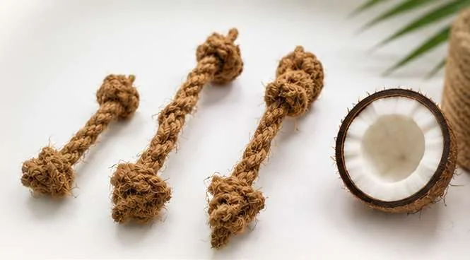

Materials & claims
Coffee Wood, Coir, Hemp and Loofah: Choosing the Right Material

Short answer: choose the material by the job the toy has to do. Coffee wood suits hard, long chewing (with the thick-cut Gorilla line for strong chewers); coconut coir suits fetch and carry; hemp suits owner-led tug and rope forms; loofah suits light cat play. Coffee stem and coconut husk are by-products of existing agriculture, while hemp and loofah are grown crops — so each has a different, and differently provable, origin story.
The four materials in one line each
Coffee wood: stem wood from coffee trees, seasoned and dried into hard chew sticks.
Coconut fiber (coir): coarse fibre from the coconut husk, wound into textured balls.
Hemp fiber: plant fibre spun into rope and used for knotted toys and balls.
Loofah: the dried fibrous interior of a gourd, cut into light shapes.

Coffee wood vs coir vs hemp vs loofah
| Coffee wood | Coconut coir | Hemp | Loofah | |
|---|---|---|---|---|
| Best for | Long, hard chewing | Fetch and carry | Owner-led tug | Light cat play |
| Strong chewers | Yes — Gorilla line | No | Supervised tug only | No |
| Feel | Hard, dense | Coarse, springy | Firm, twisted | Light, spongy |
| Wears into | Soft fibres | Short shed fibres | Strands if frayed | Small pieces |
| Origin | By-product of coffee farming | By-product of coconut processing | Grown crop | Grown crop |
| Priority at sample approval | Dimensions, finish, cracks, moisture | Winding, core, loose ends, weight | Fibre declaration, knots, joins | Shape, thickness, edges, attachments |
| VietPaw formats | CC01 sticks, Gorilla, wood-and-rope | Cat ball, dog ball | Rope toys, balls | Cat shapes |

Choosing a material, step by step
- Name the play type
Action: Chewing, fetch, tug or batting.
Result: One or two materials already stand out. - Name the pet and chewing strength
Action: Cat or dog; gentle, moderate or strong.
Result: Strong chewers go to Gorilla coffee wood. - List every component
Action: Core, thread, adhesive, rope, attachments, pack.
Result: An accurate composition claim. - Check the origin story you can prove
Action: By-product (coffee stem, coconut husk) or grown crop (hemp, loofah).
Result: Claims that match the evidence. - Compare the packed unit
Action: Packed dimensions, carton arrangement and landed cost.
Result: A price that reflects shipping space, not just weight. - Sample a small set
Action: A few distinct products rather than many near-identical variants.
Result: Sales data before you expand.
VietPaw material facts
| Material | Key figures | Minimum |
|---|---|---|
| Coffee wood | Moisture below 14% at packing; any cracked piece rejected; CC01 XS–XXL, Gorilla GRLS–GRLXL | 50 pcs per size |
| Coconut fiber | Cat ball; dog ball S/M/L; diameter and weight set by sample | Selected lines from 50 pcs |
| Hemp | Rope and ball formats; length, rope diameter and knots quoted by design | Project-specific |
| Loofah | Shapes dimensioned per design; catnip optional | Quoted per shape |
Separate the origin story from the product claim
Coffee-tree wood and coconut husks offer specific material-reuse stories. Hemp and loofah are plant-derived, but that does not make every supply a waste stream. If you want to say upcycled or waste-derived, ask what was sourced, from whom and at which stage.
The full construction still matters. A hemp rope joined to wood is a mixed-material product, and a loofah shape with thread and decoration contains more than loofah. Describe combinations accurately instead of extending a single-material claim across the toy.
Compare the finished packed unit
Material choice affects size, weight and pack design. A light item in a bulky display box may use more shipping space than its weight suggests. Ask for packed dimensions and carton arrangement while the design can still change, and review moisture protection alongside shelf appearance.
For a repeatable range, keep one approved file per SKU: component list, dimensions, sample photographs, packing details and label wording.
Frequently asked
Which natural material is most durable for dogs?
Coffee wood. For strong chewers, VietPaw’s thick-cut Gorilla line gives the most wood per piece.
Which material is best for cats?
Loofah shapes and small coconut fiber balls suit batting and carrying.
Is hemp the same as coconut fiber?
No. They are different plant fibres. Hemp is spun into rope; coir is the coarse husk fibre of the coconut.
Which materials are by-products?
Coffee stem wood and coconut husk come from existing agriculture. Hemp and loofah are grown crops, so we do not call them waste.
Can I mix materials in one order?
Yes. Minimums are confirmed per product and size, and one sample request can cover several materials.